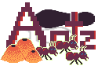

I made this game with two other people back in February 2021, for the Brackey Game Jam 2021.1. This jam lasted a whole week, and I did it with two coworkers. We were all working full time during the time of the jam too, so we had to balance expectations.
For this jam, I didn't do most of the coding. I was mainly doing the art assets, including (for the first time ever) custom music! I'd been wanting to write music for a while by that point, and I'm glad I got my hands dirty with it.
I'm still a bit unsure how the game is supposed to be properly played, and the music I find is a bit irritating still, but I thought my sound effects (which I also made) were very nice!
Anyway, you can play it directly on itch.io here: Antz: The Picnic Simulator